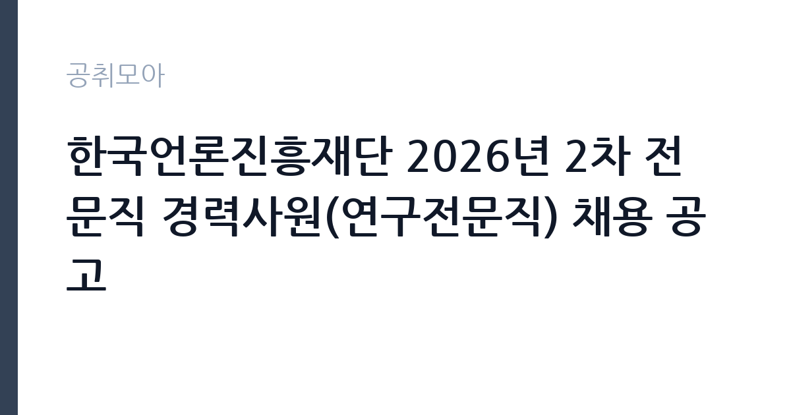

[공공기관] 한국언론진흥재단 2026년 2차 전문직 경력사원(연구전문직) 채용 공고
한국언론진흥재단 · 서울 · 마감 2026-10-22 (D-14) · 출처 잡알리오

한눈에 보는 모집 조건
| 기관 | 한국언론진흥재단 |
|---|---|
| 공고명 | 한국언론진흥재단 2026년 2차 전문직 경력사원(연구전문직) 채용 공고 |
| 고용형태 | 정규직 |
| 근무지 | 서울 |
| 게시일 | 2026-10-08 |
| 마감일 | 2026-10-22 (D-14) |
지원자격, 이렇게 읽으세요
- 공공기관 채용공시
- 세부 조건은 원문 공고문 확인
응시 자격의 핵심은 저널리즘 혹은 미디어 교육 및 수용자 연구 분야의 박사학위 소지 여부입니다. 연령과 성별 등 직무와 관련 없는 일체의 제한은 두지 않는다고 명시되어 있습니다. 경력사원 모집이므로 박사학위 취득 이후의 연구 경력과 실적이 평가의 중심이 됩니다. 언론학이나 미디어교육, 수용자 연구 관련 논문과 프로젝트 수행 경험이 있으신 분이 대상이며, 세부 자격요건과 제출 서류는 재단 채용 게시판의 첨부 공고문에서 확인하셔야 합니다. 접수는 온라인 접수처(plusrecruit)를 통해 진행되며 마감일 18시 이전에 제출을 완료하셔야 합니다.
이 공고의 포인트
이 공고의 포인트는 세 가지입니다. 첫째, 박사급 연구 인력을 무기계약직으로 채용한다는 점으로, 언론 유관 공공기관에서 연구 경력을 이어갈 수 있는 흔치 않은 기회입니다. 둘째, 한국언론진흥재단은 문화체육관광부 산하 기타공공기관으로 디지털저널리즘 역량 강화와 수습기자 교육, KPF미카 온라인 교육 플랫폼 운영 등 언론 현장과 맞닿은 사업을 직접 수행하므로 연구가 실무로 연결되는 환경입니다. 셋째, 서울 중구 세종대로 본사 근무로 수도권 거주 연구자에게 접근성이 좋습니다. 언론학 박사로서 정책 연구와 현장 지원을 병행하고 싶으신 분께 적합한 자리입니다.
전형은 어떻게 진행되나
전형은 서류전형과 면접전형 중심으로 진행됩니다. 1차 공고(미디어연구·세무회계사 모집)도 온라인 접수 후 서류와 면접으로 선발했으며, 연구전문직의 경우 연구 실적 심사가 서류전형의 핵심을 이룹니다. 박사학위 논문과 게재 논문, 연구 프로젝트 참여 이력을 중심으로 평가하므로 연구 실적 목록을 체계적으로 정리해 제출하시는 것이 중요합니다. 면접에서는 연구 분야의 전문성과 재단 사업에 대한 이해, 조직 기여 방안을 확인합니다. 접수 마감은 2026년 10월 22일이며, 이후 일정은 재단 채용 게시판에 안내됩니다.
원문에서 확인한 전형 방식
○ ‘저널리즘’ 혹은 ‘미디어 교육 및 수용자 연구’ 분야 박사학위 소지자 ○ 연령·성별 등 직무와 관련 없는 일체의 제한 없음
이런 분께 추천해요
- 저널리즘과 미디어교육, 수용자 연구 분야 박사학위를 소지하고 공공기관에서 연구 경력을 이어가고 싶으신 분께 추천합니다.
- 언론사 기자 교육과 디지털저널리즘, 미디어 리터러시 사업에 연구자로 기여하고 싶으신 분께 적합합니다.
- 계약 갱신 부담 없는 무기계약직(전문직)으로 안정적인 연구 환경을 원하시는 박사급 인력께 좋은 기회입니다.
지원 전 체크리스트
- 본인의 박사학위 전공이 공고의 저널리즘 혹은 미디어 교육·수용자 연구 분야에 해당하는지 먼저 대조하십시오.
- 연구 실적 목록(논문·프로젝트·보고서)을 최신 상태로 정리하고 증빙 자료를 준비하십시오.
- 재단의 주요 사업(디지털저널리즘 교육·KPF미카·수습기자 교육)을 사전에 파악해 지원 동기와 연결하십시오.
- 온라인 접수 마감 시각을 확인하고 마감일 서버 혼잡을 피해 최소 하루 전에 제출을 완료하십시오.
모집 일정과 제출 타이밍
접수 마감은 2026년 10월 22일입니다. 연구 실적 정리와 자기소개서 작성에 시간이 필요하므로 접수 시작 직후부터 준비하시는 것을 권장합니다. 서류전형 합격자 발표와 면접 일정은 마감 이후 재단 홈페이지 채용 게시판에 공지됩니다. 1차 모집(5월 접수)은 서류와 면접을 거쳐 6월 말 최종 합격자를 발표했으므로, 이번 2차도 유사한 흐름으로 11월 중순 전후에 결과가 나올 것으로 예상됩니다. 다만 정확한 일정은 재단 공지를 확인하셔야 합니다.
직무 이해하기: 공공기관
연구전문직은 재단의 조사 연구와 교육 사업을 뒷받침하는 역할을 맡습니다. 한국언론진흥재단은 디지털저널리즘 역량 강화와 AI·데이터 기반 교육 과정 운영, 수습기자 기본교육, KPF 디플로마와 해외 연수 지원, 온라인 교육 플랫폼 KPF미카 운영 등 언론인 교육 사업을 폭넓게 수행합니다. 연구전문직은 미디어 환경 변화에 대응하는 조사 연구와 교육 과정 개발, 수용자 연구를 담당하며 정책 수립의 근거 자료를 생산합니다. 언론 현장과 학계, 정책을 잇는 가교 역할을 수행하는 자리이므로 실무 감각과 연구 역량을 함께 갖춘 분이 적합합니다.
자기소개서 작성 팁
자기소개서 성격의 서류에서는 박사 연구 주제와 재단 사업의 연결고리를 명확히 보여주십시오. 저널리즘과 미디어교육 분야에서 본인이 수행한 연구가 재단의 교육 사업이나 정책 지원에 어떻게 기여할 수 있는지를 구체적으로 기술하시는 편이 좋습니다. 논문 목록을 나열하는 데 그치지 말고, 대표 연구 2~3건의 문제의식과 성과, 현장 적용 가능성을 서술하십시오. 재단의 최근 사업 방향(AI 저널리즘·데이터저널리즘·수용자 연구)에 대한 이해를 드러내시면 좋은 평가를 받을 수 있습니다.
면접 준비 포인트
면접에서는 연구 전문성과 조직 기여도를 함께 확인합니다. 본인의 박사 연구를 3분 이내로 설명하는 연습을 하시고, 재단의 사업 중 본인이 기여할 수 있는 영역을 구체적으로 제시하십시오. 디지털 전환 시대의 저널리즘 현안에 대한 견해를 묻는 질문이 나올 수 있으므로 최근 미디어 환경 이슈를 정리해 두시는 것이 좋습니다. 공공기관 면접인 만큼 직업윤리와 공직 가치에 대한 질문에도 답변을 준비하십시오. 복장은 단정하게, 답변은 근거 중심으로 하시길 권장합니다.
급여·근무조건 읽는 법
보수 수준을 가늠할 수 있는 공시 자료가 있습니다. 알리오 공공기관 경영정보 공개시스템의 2025년 확정 공시에 따르면 한국언론진흥재단 일반정규직의 1인당 평균 연봉은 7,984만원이며 신입사원 초봉은 3,630만원입니다(출처: 알리오 경영공시, kbizin 정리). 평균 근속연수는 14.5년으로 장기 근무가 일반적입니다. 다만 전문직(무기계약직)의 보수는 별도 보수 규정에 따르며 박사급 경력직으로서 별첨 공고문의 보수 조건을 확인하셔야 합니다. 정확한 보수표는 첨부 공고문에서 확인하시기 바라며, 경쟁률과 합격선은 공개되지 않았습니다.
자주 묻는 질문
- 전문직은 계약직입니까?
재단에서 전문직은 무기계약직의 공식 명칭입니다. 기간제와 달리 계약 기간의 정함이 없어 정년까지 근무할 수 있으며, 2026년 1차 공고에서도 전문직은 무기계약직이라고 명시되었습니다. 처우는 재단의 전문직 보수 규정에 따릅니다. - 박사학위가 반드시 필요합니까?
이번 연구전문직 모집은 저널리즘 혹은 미디어 교육·수용자 연구 분야 박사학위 소지자를 자격요건으로 명시하고 있습니다. 석사 이하 학위로는 지원이 어려우니 공고문의 자격요건을 정확히 확인하십시오. - 근무지는 어디입니까?
한국언론진흥재단 본사는 서울 중구 세종대로에 위치해 있습니다. 이번 모집 분야의 근무지도 본사(서울)로 공고되어 있으니 수도권 근무를 희망하시는 분께 적합합니다.
함께 보면 좋은 공고
[공공기관] [설악산] 설악산국립공원 기간제 직원[탐방해설] 채용 추가접수 공고 — 마감 2026-10-16[공공기관] 2026년 4분기 1차 KDI 청년인턴 채용 공고(장애인 제한경쟁) — 마감 2026-10-22[공공기관] 2026년 4분기 1차 KDI 청년인턴 채용 공고 — 마감 2026-10-22출처: 잡알리오 공개정보를 바탕으로 공취모아가 정리한 안내글입니다. 모집 조건·일정은 변경될 수 있으니 지원 전 반드시 원문 공고문을 확인하세요. 본 글은 정보 제공용이며 합격을 보장하지 않습니다.